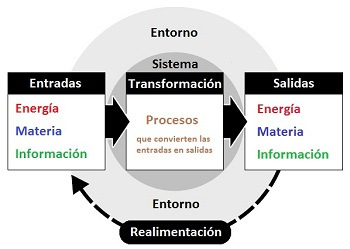

En la entrada/salida (E/S) de una computadora, DMA (Acceso Directo a Memoria), IRQ (Solicitud de Interrupción) y E/S programada son tres métodos distintos para transferir datos entre la CPU y dispositivos periféricos.
DMA (Acceso Directo a Memoria):
Es un método que permite la transferencia de datos directamente entre la memoria principal y un dispositivo periférico, sin la intervención directa de la CPU. Esto permite una transferencia de datos más rápida y eficiente que la E/S programada, ya que la CPU no necesita estar involucrada en cada paso de la transferencia.
IRQ (Solicitud de Interrupción):
Es un mecanismo que permite a los dispositivos periféricos solicitar atención a la CPU. Cuando un dispositivo necesita la atención de la CPU, envía una señal IRQ, lo que causa que la CPU interrumpa su proceso actual y ejecute una rutina de servicio de interrupción para manejar la solicitud del dispositivo.
E/S programada:
Es un método en el que la CPU es la responsable de controlar la transferencia de datos entre la memoria y los dispositivos periféricos. La CPU lee y escribe datos en los registros de los dispositivos periféricos, y los datos se transfieren de un dispositivo a otro a través de la CPU.